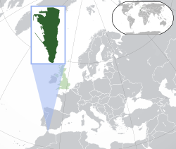
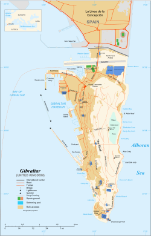

Gibraltar
Gibraltar | |
|---|---|
| Motto: | |
| Anthem: God Save the King (English: "God Save the King") | |
| Song: Gibraltar Anthem (English: "Gibraltar Anthem") | |
|  Location of Gibraltar (dark green) United Kingdom shown in pale green | |
|  Map of Gibraltar | |
| Sovereign state | |
| Capture from Spain | 4 August 1704 |
| Cession to Great Britain | 11 April 1713 |
| National Day | 10 September 1967 |
| Accession to EEC | 1 January 1973 |
| Withdrawal from the EU | 31 January 2020 |
| Official languages | English |
| Spoken languages | |
| Demonym(s) |
|
| Government | Devolved representative dependency |
• Monarch | Charles III |
• Governor | Ben Bathurst |
| Fabian Picardo | |
• Mayor | Carmen Gómez[2] |
| Legislature | Parliament |
| Government of the United Kingdom | |
• Minister | Stephen Doughty |
| Area | |
• Total | 6.8[3] km2 (2.6 sq mi) |
• Water (%) | 0 |
| Highest elevation | 426 m (1,398 ft) |
| Population | |
• 2020 estimate | 34,003[3] (220th) |
• 2022 census | 32,688 |
• Density | 5,000/km2 (12,949.9/sq mi) |
| GDP (PPP) | 2013 estimate |
• Total | £1.64 billion (not ranked) |
• Per capita | £50,941 (not ranked) |
| GDP (nominal) | 2024 estimate |
• Total | £2.911 billion[3] |
• Per capita | £85,614[3] |
| HDI (2018) | 0.961[4] very high · 3rd |
| Currency | Pound sterling Gibraltar pound (£) (GIP) |
| Time zone | UTC+01:00 (CET) |
• Summer (DST) | UTC+02:00 (CEST) |
| Driving side | right |
| Calling code | +350 |
| Postcode | GX11 1AA |
| Internet TLD | .gi |
| Website | www |
Gibraltar (/dʒɪˈbrɔːltər/ jih-BRAWL-tər, Spanish: [xiβɾalˈtaɾ]) is a British Overseas Territory[a] and city[6] located at the southern tip of the Iberian Peninsula, on the Bay of Gibraltar, near the exit of the Mediterranean Sea into the Atlantic Ocean (Strait of Gibraltar).[7][8] It has an area of 6.8 km2 (2.6 sq mi)[3] and is bordered to the north by Spain (Campo de Gibraltar). The landscape is dominated by the Rock of Gibraltar, at the foot of which is a densely populated town area, home to some 34,003 people, primarily Gibraltarians.[9]
Gibraltar was founded as a permanent watchtower by the Almohads in 1160. It switched control between the Nasrids, Castilians and Marinids in the Late Middle Ages, acquiring larger strategic clout upon the destruction of nearby Algeciras c. 1375. It became again part of the Crown of Castile in 1462. In 1704, Anglo-Dutch forces captured Gibraltar from Spain during the War of the Spanish Succession, and it was ceded to Great Britain in perpetuity under the Treaty of Utrecht in 1713. It became an important base for the Royal Navy, particularly during the Napoleonic Wars and World War II, as it controlled the narrow entrance and exit to the Mediterranean Sea, the Strait of Gibraltar, with half the world's seaborne trade passing through it.[10][11][12]
The sovereignty of Gibraltar is a point of contention in Anglo-Spanish relations, as Spain asserts a claim to the territory.[13][14] Gibraltarians overwhelmingly rejected proposals for Spanish sovereignty in a 1967 referendum, and for shared sovereignty in a 2002 referendum.[15][16] Nevertheless, Gibraltar maintains close economic and cultural links with Spain, with many Gibraltarians speaking Spanish as well as a local dialect known as Llanito.[17][18][19]
Gibraltar's economy rests on financial services, e-gaming, tourism and the port.[20] With one of the world's lowest unemployment rates, the largest part of the labour force are resident in Spain or non-Gibraltarians, especially in the private sector. Since Brexit, Gibraltar is not a member of the European Union but negotiations are under way to have it participate in the Schengen Agreement to facilitate border movements between Gibraltar and Spain.[21] As of March 2023[update], talks seem deadlocked.[22]
Name
The name is derived from Arabic: جبل طارق, romanized: Jabal Ṭāriq, lit. 'Mount of Tariq' (named after the 8th-century North African military leader Tariq ibn Ziyad, who began the Muslim conquest of the Iberian Peninsula via the Strait of Gibraltar in 711).[23]
History
Prehistory and ancient history
Evidence of Neanderthal habitation in Gibraltar from around 50,000 years ago has been discovered at Gorham's Cave.[24] The caves of Gibraltar continued to be used by Homo sapiens after the final extinction of the Neanderthals. Stone tools, ancient hearths and animal bones dating from around 40,000 years ago to about 5,000 years ago have been found in deposits left in Gorham's Cave.[25]
Numerous potsherds dating from the Neolithic period have been found in Gibraltar's caves, mostly of types typical of the Almerian culture found elsewhere in Andalusia, especially around the town of Almería, from which it takes its name.[26] There is little evidence of habitation in the Bronze Age when people had largely stopped living in caves.[27]
During ancient times, Gibraltar was regarded by the peoples of the Mediterranean as a place of religious and symbolic importance. The Phoenicians were present for several centuries since around 950 BC, apparently using Gorham's Cave as a shrine to the genius loci,[28] as did the Carthaginians and Romans after them. Gibraltar was known as Mons Calpe, a name perhaps of Phoenician origin.[16] Mons Calpe was considered by the ancient Greeks and Romans as one of the Pillars of Hercules, after the Greek legend of the creation of the Strait of Gibraltar by Heracles. There is no known archaeological evidence of permanent settlements from the ancient period.[29] They settled at the head of the bay in what is today known as the Campo (hinterland) of Gibraltar.[30] The town of Carteia, near the location of the modern Spanish town of San Roque, was founded by the Phoenicians around 950 BC on the site of an early settlement of the native Turdetani people.[31]
Middle Ages
After the collapse of the Western Roman Empire, Gibraltar came briefly under the control of the Vandals, who crossed into Africa at the invitation of Boniface, the Count (or commander) of the territory.[citation needed]
The area later formed part of the Visigothic Kingdom of Hispania for almost 300 years, from 414 until 711 AD.[citation needed]
Following a raid in 710, a predominantly Berber army under the command of Tariq ibn Ziyad crossed from North Africa in April 711 and landed somewhere in the vicinity of Gibraltar (though most likely not in the bay or at the Rock itself).[32][33] Tariq's expedition led to the Islamic conquest of most of the Iberian peninsula. Mons Calpe was renamed Jabal Ṭāriq (جبل طارق), "the Mount of Tariq", subsequently corrupted into Gibraltar.[16]
In 1160 the Almohad Sultan Abd al-Mu'min ordered that a permanent settlement, including a castle, be built. It received the name of Medinat al-Fath (City of the Victory).[34] The Tower of Homage of the Moorish Castle remains standing today.
From 1274 onwards, the town was fought over and captured by the Nasrids of Granada (in 1237 and 1374), the Marinids of Fez (in 1274 and 1333) and the kings of Castile (in 1309). Upon the Nasrid destruction and abandonment of Algeciras c. 1375 and Nasrids' procurement of Gibraltar away from Marinids in 1375, the Nasrids favoured Gibraltar (a worse natural harbor than Algeciras but featuring better defence capabilities) as a military and urban outpost in the Strait, although Gibraltar did not ever reach a large population during this period.[35]
Modern era
In 1462, Gibraltar was captured by Juan Alonso de Guzmán, 1st Duke of Medina Sidonia, from the Emirate of Granada.[36]
After the conquest, Henry IV of Castile assumed the additional title of King of Gibraltar, establishing it as part of the comarca of the Campo Llano de Gibraltar.[37] Six years later, Gibraltar was restored to the Duke of Medina Sidonia, who sold it in 1474 to a group of 4,350 conversos (Christian converts from Judaism) from Cordova and Seville and in exchange for maintaining the garrison of the town for two years, after which time they were expelled, returning to their home towns or moving on to other parts of Spain.[38] In 1501, Gibraltar passed back to the Spanish Crown, and Isabella I of Castile issued a Royal Warrant granting Gibraltar the coat of arms that it still uses.[citation needed]
In 1704, during the War of the Spanish Succession, a combined Anglo-Dutch fleet, representing the Grand Alliance, captured the town of Gibraltar on behalf of the Archduke Charles of Austria in his campaign to become King of Spain. Subsequently, most of the population left the town, with many settling nearby.[39] As the Alliance's campaign faltered, the 1713 Treaty of Utrecht was negotiated, which ceded control of Gibraltar to Britain to secure Britain's withdrawal from the war. Unsuccessful attempts by Spanish monarchs to regain Gibraltar were made, with the siege of 1727, and again with the Great Siege of Gibraltar (1779 to 1783), during the American War of Independence.[citation needed]
After the destructive Great Siege, the town was almost entirely rebuilt.[40] Giovanni Maria Boschetti, who arrived in Gibraltar in 1784 as a 25-year-old from Milan, where he is thought to have been a stonemason or engineer, built the Victualling Yard (completed in 1812) and many other buildings. Boschetti is regarded as having been responsible for setting the old town's style, described by Claire Montado, chief executive of the Gibraltar Heritage Trust, as "military-ordnance-style arched doorways, Italianate stucco relief, Genoese shutters, English Regency ironwork balconies, Spanish stained glass and Georgian sash and casement windows."[40]
During the Napoleonic Wars, Gibraltar became a key base for the Royal Navy and played an important role leading up to the Battle of Trafalgar (21 October 1805). Designated one of four Imperial fortresses (along with Halifax, Nova Scotia, Bermuda, and Malta),[41] its strategic location made it a key base during the Crimean War of 1854–1856. In the 18th century, the peacetime military garrison fluctuated in numbers from a minimum of 1,100 to a maximum of 5,000. The first half of the 19th century saw a significant increase of population to more than 17,000 in 1860, as people from Britain and all around the Mediterranean – Italian, Portuguese, Maltese, Jewish and French – took up residence in the town.[42]
Its strategic value increased with the opening of the Suez Canal, as it lay on the sea route between the UK and the British Empire east of Suez. In the later 19th century, major investments were made to improve the fortifications and the port.[43]
Contemporary history
During the Second World War, most of Gibraltar's civilian population was evacuated, mainly to London, but also to parts of Morocco and Madeira and to Gibraltar Camp in Jamaica. The Rock was strengthened as a fortress. On 18 July 1940, the Vichy French air force attacked Gibraltar in retaliation for the British bombing of the Vichy navy. The naval base and the ships based there played a key role in the provisioning and supply of the island of Malta during its long siege. As well as frequent short runs, known as "Club Runs", towards Malta to fly off aircraft reinforcements (initially Hurricanes, but later, notably from the USN aircraft carrier Wasp, Spitfires), the critical Operation Pedestal convoy was run from Gibraltar in August 1942. This resupplied the island at a critical time in the face of concentrated air attacks from German and Italian forces. Spanish dictator Francisco Franco's reluctance to allow the German Army onto Spanish soil frustrated a German plan to capture the Rock, codenamed Operation Felix.[citation needed]
In the 1950s, Franco renewed Spain's claim to sovereignty over Gibraltar and restricted movement between Gibraltar and Spain. Gibraltarians voted overwhelmingly to remain under British sovereignty in the 1967 Gibraltar sovereignty referendum, which led to the passing of the Gibraltar Constitution Order in 1969. In response, Spain completely closed the border with Gibraltar and severed all communication links.[44] The border with Spain was partially reopened in 1982 and fully reopened in 1985 before Spain's accession to the European Community.[citation needed]
In the early 2000s, Britain and Spain were in negotiations over a potential agreement that would see them sharing sovereignty over Gibraltar. The government of Gibraltar organised a referendum on the plan, and 99% of the population voted to reject it.[45][46] In 2008, the British government committed to respecting the Gibraltarians' wishes.[47] A new Constitution Order was approved in referendum in 2006. A process of tripartite negotiations started in 2006 between Spain, Gibraltar and the UK, ending some restrictions and dealing with disputes in some specific areas such as air movements, customs procedures, telecommunications, pensions and cultural exchange.[48]
In the British referendum on membership of the European Union 96% of Gibraltarians voted to remain on an 84% turnout.[49] Spain renewed calls for joint Spanish–British control of the peninsula;[50] these were strongly rebuffed by Gibraltar's Chief Minister.[51] On 18 October 2018, however, Spain seemed to have reached an agreement with the United Kingdom in relation to its objections to Gibraltar leaving the EU with the UK, with Spain's prime minister Pedro Sánchez stating, "Gibraltar will no longer be a problem in arriving at a Brexit deal."[52]
On 31 January 2020, the UK left the European Union and consequently so did Gibraltar. Under the terms of the transition phase in the Brexit withdrawal agreement, Gibraltar's relationship with the EU continued unchanged until the end of 2020 when it was replaced by the EU–UK Trade and Cooperation Agreement. On 31 December 2020, the UK and Spain agreed in principle on a basis for the EU and the UK to negotiate an agreement through which Gibraltar would participate in the Schengen Area,[21] to avoid a hard border with Spain. The arrangements have not entered into force.[21][53][54][55]
In 2022, Gibraltar launched a bid for city status as part of the Platinum Jubilee Civic Honours. The bid was refused, but when researchers looked through the National Archives, they found that it had already been recognised as a city by Queen Victoria in 1842.[56] The status came into force on 29 August 2022.[56]
Governance
Under its current constitution, Gibraltar has almost complete internal self-governance through a parliament[57][58][59] elected for a term of up to four years. The unicameral parliament presently consists of 17 elected members, and the Speaker who is not elected but appointed by a resolution of the parliament.[60] The government consists of 10 elected members. The head of state is the British monarch King Charles III, who is represented by the Governor of Gibraltar. The governor enacts day-to-day matters on the advice of the Gibraltar Parliament but is responsible to the British government in respect of defence, foreign policy, internal security and general good governance. Judicial and other appointments are made on behalf of the monarch in consultation with the head of the elected government.[61][62][63]
The 2011 election was contested by the Gibraltar Social Democrats (GSD), Gibraltar Socialist Labour Party (GSLP)-Liberal Party of Gibraltar (LPG) Alliance and the Progressive Democratic Party (PDP). The PDP was a new party, formed in 2006 and fielded candidates in the 2007 election, but none were elected. The head of government is the Chief Minister (as of December 2011[update], Fabian Picardo). All local political parties oppose any transfer of sovereignty to Spain, instead supporting self-determination. The main UK opposition parties also support this policy, and it is British government policy not to engage in talks about the sovereignty of Gibraltar without the consent of the people of Gibraltar.[64]
Gibraltar was part of the European Union, having joined through the European Communities Act 1972 (UK), which gave effect to the Treaty of Accession 1972, as a dependent territory of the United Kingdom under what was then article 227(4) of the Treaty Establishing the European Community covering special member state territories, with exemption from some areas such as the European Union Customs Union, Common Agricultural Policy and the Schengen Area. It is the only British Overseas Territory which was part of the European Union. After a 10-year campaign for the right to vote in European elections, from 2004 to 2019 the people of Gibraltar participated in elections for the European Parliament as part of the South West England constituency.[65] On 23 June 2016 Gibraltar voted along with the United Kingdom in the EU referendum; 96% of its population voted to remain, but the overall United Kingdom result gave a 51.9% majority to leaving the EU.[66] Nevertheless, Spanish Prime Minister Pedro Sánchez stated on 18 October 2018 that the Gibraltar protocol had been "resolved" and that Spain will hold no objection when Gibraltar leaves the EU with Britain.[67][68]
Gibraltar was nominated to be included on the United Nations list of non-self-governing territories by the United Kingdom when the list was created in 1946[69] and has been listed ever since.[70] The government of Gibraltar has actively worked to have Gibraltar removed from the list,[71] and in 2008 the British government declared Gibraltar's continued presence on the list an anachronism.[72]
Gibraltar is not a member of the Commonwealth of Nations in its own right and is represented by the United Kingdom but was granted Associate Membership of the Commonwealth Foundation in 2004. Gibraltar has competed in the Commonwealth Games since 1958.[citation needed]
| Party | Members of Parliament | |
|---|---|---|
| Socialist Labour | 7 | |
| Social Democrats | 8 | |
| Liberal | 2 | |
| Total | 17 | |
Citizenship
As a result of the British Nationality Act 1981, Gibraltarians were made British Overseas Territories citizens by default, but could apply for registration as a British citizen ("an entitlement that cannot be refused") under section 5 of the Act. Under the subsequent British Overseas Territories Act 2002, all British Overseas Territories citizens became British citizens on 21 May 2002.[citation needed]
International relations
Gibraltar is not a sovereign state: its formal international relations are the responsibility of the Government of the United Kingdom. Since Brexit, it is not part of the European Union, but is a participant in the EU–UK Trade and Cooperation Agreement.[citation needed]
On 31 December 2020, the UK and Spain agreed in principle on a basis for the EU and the UK to negotiate an agreement through which Gibraltar would participate in the Schengen Area,[21] to avoid a hard border with Spain. The arrangements have not entered into force,[21][53] but both sides aim to keep delays at the border at a minimum in the meantime.[54][73][74] As of March 2023[update], talks remain stalled, with Spain insisting that its Policía Nacional control entry into the Schengen area and the UK demanding that the work be done by officers of the European Union agency Frontex. All other entry points to the Schengen area are controlled by national authorities, supplemented by Frontex in some places.[22]
Geography
Gibraltar's territory covers 6.8 km2 (2.6 sqmi)[3] and shares a 1.2 km (0.75 mi) land border with Spain. The town of La Línea de la Concepción, a municipality of the province of Cádiz, lies on the Spanish side of the border. The Spanish hinterland forms the comarca of Campo de Gibraltar (literally "Countryside of Gibraltar"). The shoreline measures 12 km (7.5 mi) in length. There are two coasts ("Sides") of Gibraltar: the East Side, which contains the settlements of Sandy Bay and Catalan Bay; and the Westside, where the vast majority of the population lives. Gibraltar has no administrative divisions but is divided into seven Major Residential Areas.
Having negligible natural resources and few natural freshwater resources, limited to natural wells in the north, until recently Gibraltar used large concrete or natural rock water catchments to collect rainwater. Fresh water from the boreholes is nowadays supplemented by two desalination plants: a reverse osmosis plant, constructed in a tunnel within the rock, and a multi-stage flash distillation plant at North Mole.[75]
Gibraltar's terrain consists of the 426 m-high (1,398 ft) Rock of Gibraltar[76] made of Jurassic limestone, and the narrow coastal lowland surrounding it. It contains many tunnelled roads, most of which are still operated by the military and closed to the general public.
Climate
Gibraltar has a Mediterranean climate (Köppen climate classification Csa),[77][78] with mild, rainy winters and summers that are very warm to hot and humid, but with very little rainfall. As is the case for nearby Algeciras and Tarifa, summers are significantly cooler and annual temperature more constant than other cities on the southern coast of the Iberian peninsula because of its position on the Strait of Gibraltar. Rain occurs mainly in winter, with summer being generally dry. Its average annual temperature is 21.7 °C (71.1 °F) as a daily high and 15.8 °C (60.4 °F) as the overnight low. In the coldest month, January, the high temperature averages 16.3 °C (61.3 °F) and the overnight low averages 11.2 °C (52.2 °F) and the average sea temperature is 16 °C (61 °F). In the warmest month, August, the daily high temperature averages 28.4 °C (83.1 °F), the overnight low averages 21.2 °C (70.2 °F), and the average sea temperature is 22 °C (72 °F).[79] [80]
| Climate data for Gibraltar International Airport (GIB) weather station (ICAO indicator:[b] LXGB, WMO identifier:[c] 08495), 5m amsl,[d] 1991−2020 normals (except dewpoints and humidity), 1985-2015 dewpoints and humidity, extremes 1958−present | |||||||||||||
|---|---|---|---|---|---|---|---|---|---|---|---|---|---|
| Month | Jan | Feb | Mar | Apr | May | Jun | Jul | Aug | Sep | Oct | Nov | Dec | Year |
| Record high °C (°F) | 24.0 (75.2) |
24.1 (75.4) |
30.3 (86.5) |
32.0 (89.6) |
33.2 (91.8) |
38.0 (100.4) |
40.6 (105.1) |
40.2 (104.4) |
34.5 (94.1) |
33.7 (92.7) |
29.6 (85.3) |
25.0 (77.0) |
40.6 (105.1) |
| Mean daily maximum °C (°F) | 16.3 (61.3) |
16.7 (62.1) |
18.3 (64.9) |
20.0 (68.0) |
22.6 (72.7) |
25.6 (78.1) |
28.1 (82.6) |
28.4 (83.1) |
25.9 (78.6) |
22.5 (72.5) |
19.1 (66.4) |
17.0 (62.6) |
21.7 (71.1) |
| Daily mean °C (°F) | 13.8 (56.8) |
14.2 (57.6) |
15.6 (60.1) |
17.0 (62.6) |
19.3 (66.7) |
22.1 (71.8) |
24.3 (75.7) |
24.8 (76.6) |
22.8 (73.0) |
19.9 (67.8) |
16.6 (61.9) |
14.7 (58.5) |
18.8 (65.8) |
| Mean daily minimum °C (°F) | 11.2 (52.2) |
11.5 (52.7) |
12.7 (54.9) |
13.9 (57.0) |
16.0 (60.8) |
18.5 (65.3) |
20.5 (68.9) |
21.2 (70.2) |
19.7 (67.5) |
17.3 (63.1) |
14.1 (57.4) |
12.4 (54.3) |
15.8 (60.4) |
| Record low °C (°F) | 0.0 (32.0) |
0.6 (33.1) |
2.0 (35.6) |
0.0 (32.0) |
9.0 (48.2) |
9.0 (48.2) |
14.4 (57.9) |
13.9 (57.0) |
12.3 (54.1) |
9.0 (48.2) |
5.7 (42.3) |
0.8 (33.4) |
0.0 (32.0) |
| Average precipitation mm (inches) | 97.5 (3.84) |
93.6 (3.69) |
83.4 (3.28) |
68.8 (2.71) |
26.9 (1.06) |
8.5 (0.33) |
0.7 (0.03) |
1.1 (0.04) |
25.6 (1.01) |
84.9 (3.34) |
99.1 (3.90) |
150.7 (5.93) |
740.8 (29.16) |
| Average precipitation days (≥ 1.0 mm) | 7.20 | 6.36 | 6.64 | 6.51 | 3.74 | 0.94 | 0.23 | 0.20 | 2.66 | 6.25 | 7.34 | 7.94 | 56.01 |
| Average relative humidity (%) | 75 | 75 | 74 | 72 | 71 | 70 | 71 | 72 | 76 | 79 | 77 | 77 | 74 |
| Average dew point °C (°F) | 9 (48) |
9 (48) |
11 (52) |
11 (52) |
13 (55) |
16 (61) |
18 (64) |
19 (66) |
18 (64) |
16 (61) |
12 (54) |
11 (52) |
14 (56) |
| Mean monthly sunshine hours | 147 | 143 | 204 | 233 | 289 | 319 | 326 | 309 | 240 | 197 | 135 | 134 | 2,676 |
| Source 1: Deutscher Wetterdienst (February, July and August record lows only)[81] | |||||||||||||
| Source 2: Meteoclimat (normals except dewpoints and humidity)[82]
Source 3: Meteoclimat (records except February, July and August record lows)[83] Source 4: Time and Date (dew points and humidity)[84] | |||||||||||||
Flora and fauna
Over 500 different species of flowering plants grow on the Rock. Gibraltar is the only place in Europe where the Gibraltar candytuft (Iberis gibraltarica) is found growing in the wild; the plant is otherwise native to North Africa. It is the symbol of the Upper Rock nature reserve. Olive and pine trees are among the most common of those growing around the Rock.[citation needed]
Most of the Rock's upper area is covered by a nature reserve which is home to around 230 Barbary macaques, the famous "apes" of Gibraltar, which are actually monkeys. These are the only wild apes or monkeys found in Europe.[85] This species, known scientifically as Macaca sylvanus, is listed as endangered by the IUCN Red List and is declining. Three-quarters of the world population live in the Middle Atlas mountains of Morocco. Recent genetic studies and historical documents point to their presence on the Rock before British control, having possibly been introduced during the Islamic period. A superstition analogous to that of the ravens at the Tower of London states that if the apes ever leave, so will the British. In 1944, British Prime Minister Winston Churchill was so concerned about the dwindling population of apes that he sent a message to the Colonial Secretary requesting that something be done about the situation.[86]
Other mammals found in Gibraltar include rabbits, foxes and bats. Dolphins and whales are frequently seen in the Bay of Gibraltar. Migrating birds are very common and Gibraltar is home to the only Barbary partridges found on the European continent.[citation needed]
In 1991, Graham Watson, Gibraltar's MEP, highlighted conservationists' fears that urban development, tourism and invasive plant species were threatening Gibraltar's own plants as well as birds and bat species.[87]
Environment
In May 2016, a report by the World Health Organization showed that Gibraltar had the worst air quality in any British territory. The report concentrated on PM10 and PM2.5 pollutants in the air.[88]
Economy
Gibraltar's economy is dominated by four main sectors: financial services, online gambling, shipping, and tourism, which includes duty-free retail sales to visitors.[89] The British military traditionally dominated Gibraltar's economy, with the naval dockyard providing the bulk of economic activity. This, however, has diminished over the last 20 years and is estimated to account for only 7 per cent of the local economy, compared to over 60 per cent in 1984. The territory also has a small manufacturing sector, representing a bit less than 2 per cent of the economy.
Gibraltar's labour market employs around thirty thousand workers, 80% in the private sector and 20% in the public sector. The unemployment rate is extremely low, at around 1 per cent.[citation needed]
More than half (53 Percent) of the labour force are resident in Spain or are non Gibraltarians. According to the Government of Gibraltar's statistics, around 45 Percent of the total employee jobs, and 58% of the private sector jobs, are held by frontier workers (employees who are normally resident in Spain but are employed in Gibraltar). Around 63 Percent of the frontier workers are Spanish nationals. More than half (55 Percent) of the private sector employee jobs are held by persons who are not Gibraltarians or Other British nationalities. The public sector, on the other hand, employs mainly Gibraltarians and other British (90 Percent) [90] As a consequence, according to Fabian Picardo, Chief Minister of Gibraltar, during Brexit negotiations, a frontier which lacked the necessary fluidity for people to be able to access their places of work would put directly at risk nearly half of the jobs of the Gibraltar workforce.[91][92]
In the early 2000s, many bookmakers and online gaming operators moved to Gibraltar to benefit from operating in a regulated jurisdiction with a favourable corporate tax regime. This corporate tax regime for non-resident controlled companies was phased out by January 2011 and replaced by a still favourable fixed corporate tax rate of 10 per cent.[93]
Tourism is also a significant industry. Gibraltar is a popular port for cruise ships and attracts day visitors from resorts in Spain. The Rock is a popular tourist attraction, particularly among British tourists and residents in the southern coast of Spain. It is also a popular shopping destination, and all goods and services are VAT free, but may be subject to Gibraltar taxes. Many of the large British high street chains have branches or franchises in Gibraltar including Morrisons, Marks & Spencer and Mothercare. Branches and franchises of international retailers such as Tommy Hilfiger and Sunglass Hut are also present in Gibraltar, as is the Spanish clothing company Mango.[citation needed]
A number of British and international banks have operations based in Gibraltar. Jyske Bank claims to be the oldest bank in the country, based on Jyske's acquisition in 1987 of Banco Galliano, which began operations in Gibraltar in 1855. An ancestor of Barclays, the Anglo-Egyptian Bank, entered in 1888, and Credit Foncier (now Crédit Agricole) entered in 1920.[citation needed]
There is some manufacturing activity, representing around 2% of the total employment. One company (Bassadone Automotive Group) supplies ambulances and other project vehicles converted locally from SUV vehicles to the United Nations and other agencies, employing some 320 staff across its range of activities.[94]
In 1967, Gibraltar enacted the Companies (Taxation and Concessions) Ordinance (now an Act), which provided for special tax treatment for international business.[95] This was one of the factors leading to the growth of professional services such as private banking and captive insurance management. Gibraltar has several attractive attributes as a financial centre, including a common law legal system and access to the EU single market in financial services. Gibraltar is considered a high class jurisdiction and is listed on the "white list" by the Organisation for Economic Co-operation and Development (OECD) due to its highly regulated financial and e-gaming sectors, sharing the same status as the UK, USA and Germany.[96] It is internationally collaborative, including in the exchange of information on tax matters.[96]
The Gibraltar Stock Exchange was established in 2014.
In January 2018, Gibraltar introduced a regulatory framework for Distributed Ledger Technology, with the aim of pursuing a “more flexible, adaptive approach... in the case of novel business activities, products, and business models”.[97][98] The Financial Services Commission (FSC),[99] which was established by an ordinance in 1989 (now an Act) that took effect in 1991, regulates the finance sector.[100] In 1997, the Department of Trade and Industry established its Gibraltar Finance Centre (GFC) Division to facilitate the development the financial sector development. As of 2012[update], Gibraltar has 0.103 Big Four accounting firm offices per 1,000 population, the second highest in the world after the British Virgin Islands, and 0.6 banks per 1,000 people, the fifth most banks per capita in the world.[101] As of 2017[update], there is very significant uncertainty on continuing access to the EU single market after the forthcoming Brexit.[102]
The currency of Gibraltar is the Gibraltar pound, issued by the Government of Gibraltar under the terms of the 1934 Currency Notes Act. These banknotes are legal tender in Gibraltar alongside Bank of England banknotes.[103][104] In a currency board arrangement, these notes are issued against reserves of sterling.[104][105][106] Clearing and settlement of funds is conducted in sterling.[107] Coins in circulation follow British denominations but have separate designs. Unofficially, most retail outlets in Gibraltar accept the euro, though some payphones and the Royal Gibraltar Post Office, along with all other government offices, do not.[108]
Demographics

Gibraltar is one of the most densely populated territories in the world, with a usually-resident population in 2012 of 32,194[109] equivalent to approximately 4,959/km2 (12,840/sq mi). The growing demand for space is being increasingly met by land reclamation; reclaimed land makes up approximately one-tenth of the territory's total area, but houses over 40% of its population (2012 Census).
Ethnic groups
According to the 2012 Gibraltar census, 25,444 people (79.0%) were eligible for "Gibraltarian" status. Of the rest, 4249 (13.2%) were "other British", 675 (2.1%) were Spanish, 522 (1.6%) were Moroccan and 785 (2.4%) had other EU nationalities. There were 519 people (1.6%) with other nationalities.[110]
| Resident Census | 1981[3] | 1991[3] | 2001[3] | 2012[3] |
|---|---|---|---|---|
| Gibraltarian | 74.9% | 75.0% | 83.2% | 79.0% |
| UK and other British | 14.0% | 14.3% | 9.6% | 13.2% |
| Moroccan | 8.1% | 6.7% | 3.5% | 1.6% |
| Other nationalities (*) | 3.1% | 4.0% | 3.7% | 6.2% |
| Spanish | – | – | 1.19%[111] | 2.1% |
| Other EU | – | – | 1.0%[111] | 1.6% |
- (*) Includes all nationalities different from Gibraltarian, UK and other British and Moroccan.
Language
The official language of Gibraltar is English and is used by the government and in schools. Most locals are bilingual, also speaking Spanish. However, because of the varied mix of ethnic groups which reside there, other languages are also spoken on the Rock. Berber and Arabic are spoken by the Moroccan community, as are Hindi and Sindhi by the Indian community. Maltese is spoken by some families of Maltese descent.[112]
Gibraltarians often converse in Llanito (pronounced [ʎaˈnito]), a vernacular unique to Gibraltar. It is based on Andalusian Spanish with a strong mixture of British English and elements from languages such as Maltese, Portuguese, Genoese Italian and Haketia (a Judaeo-Spanish dialect). Llanito also often involves code-switching to English and Spanish.[citation needed]
The English language is becoming increasingly dominant in Gibraltar, with the younger generation speaking little or no Llanito despite learning Spanish in school.[113]
Gibraltarians often call themselves Llanitos.[114]
Religion
According to the 2012 census, approximately 72.1% of Gibraltarians are Roman Catholics.[115] The 16th-century Saint Mary the Crowned is the cathedral church of the Roman Catholic Diocese of Gibraltar, and also the oldest Catholic church in the territory. Other Christian denominations include the Church of England (7.7%), whose Cathedral of the Holy Trinity is the cathedral of the Anglican Bishop of Gibraltar in Europe; the Gibraltar Methodist Church,[116] Church of Scotland, various Pentecostal and independent churches mostly influenced by the House Church and Charismatic movements, as well as a Plymouth Brethren congregation. Several of these congregations are represented by the Gibraltar Evangelical Alliance.
There is also a ward of the Church of Jesus Christ of Latter-day Saints, and two congregations of Jehovah's Witnesses. 7.1% advised that they have no religion.
The third religion in size is Islam (3.6% of the population). There is also an established Hindu population (2%), members of the Baháʼí Faith and a long-established Jewish community, which, at 763 persons, accounts for 2.4% of the population.[115] There are four functioning Orthodox synagogues in Gibraltar and several kosher establishments.
Education
Education in Gibraltar generally follows the English model, operating within a three tier system. Schools in Gibraltar use the Key Stage modular approach to teach the National Curriculum. Gibraltar has 15 state schools, two private schools and a college of further education, Gibraltar College. Government secondary schools are Bayside Comprehensive School and Westside School, both of which are coeducational, and Prior Park School Gibraltar is an independent co-ed secondary school.[117]
On 31 March 2015, the government of Gibraltar announced the adoption of the University of Gibraltar Act and the University of Gibraltar opened in September 2015.[118][119] Previously, there were no facilities in Gibraltar for full-time higher education, and consequently, all Gibraltarian students studied elsewhere at degree level or its equivalent and also for certain non-degree courses.[120]
Health care
All Gibraltarians are entitled to health care in public wards and clinics at St Bernard's Hospital and primary health care centre. All other British citizens are also entitled to free-of-charge treatment on the Rock on presentation of a valid British passport during stays of up to 30 days. Dental treatment and prescribed medicines are free of charge for Gibraltarian students, pensioners and disabled individuals.[121]
The Gibraltar Health Authority, established under the Medical (Gibraltar Health Authority) Act of 1987[122] is funded through the Gibraltar Group Practice Medical Scheme. It employs around 900 people, handling 37,000 A&E attendances, 40,000 outpatient appointments, and 90,000 GP visits a year. Some specialist care is provided by visiting consultants and in UK and Spanish hospitals. First-line medical and nursing services are provided at the Primary Care Centre, which has 16 GPs, with more specialised services available at St Bernard's Hospital, a 210-bed civilian hospital opened in 2005. Psychiatric care is provided by Ocean Views.[citation needed]
As of 2012 the authority was responsible for the health of some 27,000 individuals. The GHA and Social Welfare System are closely based upon their British counterparts, namely the National Health Service.[123] As of 2003 the organisation was funded through roughly £19 million ($27 million) of social insurance stamp contributions through the Gibraltar Group Practice Medical Scheme.[124]
In September 2014 Egton Medical Information Systems won a contract, worth up to £11.25m over 10 years, to deliver an electronic patient record for the health service of Gibraltar including a patient administration system, an emergency department system, e-prescribing and other software from Ascribe, which Emis bought in September 2013.[125] The A&E unit at St Bernard's Hospital went live on 24 June 2015 using Emis' Symphony and it is planned that primary and community services and the acute hospital will start to use the Ascribe CaMIS patient administration system.[126]
A Community Mental Health Team was established in 2017, and in 2018 the Gibraltar Health Authority School of Health Studies introduced a Mental Health Nursing degree to tackle difficulties in recruiting mental health nurses.[127]
Culture
The culture of Gibraltar reflects Gibraltarians' diverse origins. While there are Spanish (mostly from nearby Andalusia) and British influences, the ethnic origins of most Gibraltarians are not confined to these ethnicities. Other ethnicities include Genoese, Maltese, Portuguese, and German. A few other Gibraltar residents are Jewish of Sephardic origin, Moroccan, or Indians. British influence remains strong, with English being the language of government, commerce, education and the media.
Gibraltar's first sovereignty referendum is celebrated annually on Gibraltar National Day (10 September). It is a public holiday, during which most Gibraltarians dress in their national colours of red and white. Until 2016, the tradition had been to also release 30,000 similarly coloured balloons, which represented the people of Gibraltar. However, this tradition has now been ended because of the threat that it poses to wildlife, particularly marine.[128] The 300th anniversary of Gibraltar's capture was celebrated in 2004 on Tercentenary Day (4 August), when in recognition of and with thanks for its long association with Gibraltar, the Royal Navy was given the Freedom of the City of Gibraltar and a human chain of Gibraltarians dressed in red, white and blue, linked hands to encircle the Rock. On 4 June 2012, the Gibraltar Diamond Jubilee Flotilla, inspired by the Thames Diamond Jubilee Pageant, celebrated sixty years of the Queen's reign.[129]
The Gibraltar Broadcasting Corporation operates a television and radio station on UHF, VHF and medium-wave. The radio service is also internet-streamed. Special events and the daily news bulletin are streamed in video. The other local radio service is operated by the British Forces Broadcasting Service which also provides a limited cable television network to HM Forces. The largest and most frequently published newspaper is the Gibraltar Chronicle, Gibraltar's oldest established daily newspaper and the world's second-oldest English language newspaper to have been in print continuously[130] with daily editions six days a week. Panorama is published on weekdays, and 7 Days, The New People, and Gibsport are weekly.
Native Gibraltarians have produced some literature of note. The first in fiction was probably Héctor Licudi's 1929 novel Barbarita, written in Spanish,[131] chronicling the largely autobiographical adventures of a young Gibraltarian man. Throughout the 1940s and 1950s, several anthologies of poetry were published by Leopoldo Sanguinetti, Albert Joseph Patron and Alberto Pizzarello. The 1960s were largely dominated by the theatrical works of Elio Cruz and his two highly acclaimed Spanish language plays La Lola se va pá Londre and Connie con cama camera en el comedor.[citation needed] In the 1990s, the Gibraltarian man-of-letters Mario Arroyo published Profiles (1994), a series of bilingual meditations on love, loneliness and death. Trino Cruz is a bilingual poet originally writing English but now mainly in Spanish, who also translates Maghreb poetry.[132][133][134] Of late there have been works by the essayist Mary Chiappe, such as her volume of essays Cabbages and Kings (2006) and by M. G. Sanchez, author of the books Rock Black: Ten Gibraltarian Stories (2008) and Diary of a Victorian Colonial (2009). Mary Chiappe and Sam Benady have also published a series of detective books centred on the character of the nineteenth-century Gibraltarian sleuth Bresciano.
Musicians from Gibraltar include Charles Ramirez, the first guitarist invited to play with the Royal College of Music Orchestra,[135] successful rock bands like Breed 77, Melon Diesel and Taxi, while Gibraltarian bassist Glen Diani played for Irish/British nu metal group One Minute Silence. Albert Hammond had top 10 hits in the UK and US and has written many songs for international artists such as Whitney Houston, Tina Turner and Julio Iglesias.[136]
Gibraltarian cuisine is the result of a long relationship between the Andalusian Spaniards and the British, as well as the many foreigners who made Gibraltar their home over the past three centuries. The culinary influences include those from Malta, Genoa, Portugal, Andalusia and Britain. This marriage of tastes has given Gibraltar an eclectic mix of Mediterranean and British cuisine, such as calentita, a baked bread-like dish made with chickpea flour, water, olive oil, salt and pepper.
Cultural references
- The outbreak of yellow fever in 1804 is the subject of Letitia Elizabeth Landon's 1836 poetical illustration
 "Gibraltar. Scene During the Plague". to an engraving of a painting by Charles Bentley (Gibraltar from Algexiras).[137] She published two further poetical illustrations on Gibraltar the following year, "Gibraltar—from the Sea".[138] and "Gibraltar, From the Queen of Spain's Chair".,[139] both of which are again to engravings of paintings by Charles Bentley. All these can be found in Fisher's Drawing Room Scrap Books.
"Gibraltar. Scene During the Plague". to an engraving of a painting by Charles Bentley (Gibraltar from Algexiras).[137] She published two further poetical illustrations on Gibraltar the following year, "Gibraltar—from the Sea".[138] and "Gibraltar, From the Queen of Spain's Chair".,[139] both of which are again to engravings of paintings by Charles Bentley. All these can be found in Fisher's Drawing Room Scrap Books. - The first track in Beirut's 2015 album No No No is named "Gibraltar", and the music video is set in a dystopian version of the territory.[140]
- Mark Twain describes a stop at Gibraltar and comments on it in The Innocents Abroad, an account of his pilgrimage to the holy land.[141]
- As Molly Bloom is a native Gibraltarian, references to Gibraltar appear throughout James Joyce's Ulysses (1922). A sculpture of Molly Bloom as imagined by local artist Jon Searle is on display in the Alameda Gardens.[142]
- John Masters' book The Rock is a collection of short stories set in Gibraltar: ranging from a story set in prehistoric times to one suggesting a possible future for the Rock.[citation needed]
- Raymond Benson's James Bond novel Doubleshot deals with a fictional plot to forcibly return Gibraltar to Spain. The climax takes place in Gibraltar.[citation needed]
- In 1782, Wolfgang Amadeus Mozart composed a fragment for voice and piano to celebrate the Great Siege of Gibraltar titled Bardengesang auf Gibraltar: O Calpe! Dir donnert's am Fusse.[citation needed]
- The film The Silent Enemy was filmed on location in Gibraltar in 1958. It is a dramatisation of the period during the Second World War when Lionel "Buster" Crabb served as a mine and disposal officer in Gibraltar while frogmen of the Italian Navy's Tenth Light Flotilla were sinking vital shipping.
- The Beatles song The Ballad of John and Yoko (1969) features the line "You can get married in Gibraltar near Spain", in reference to musician John Lennon's famous marriage to artist Yoko Ono within the territory.[143]
- The game Overwatch contains a map named "Watchpoint: Gibraltar" which is set on the Rock of Gibraltar.
- The Kanye West featuring Jay-Z song Diamonds from Sierra Leone (Remix) features the line "How could you falter when you're the rock of Gibraltar?".
Sport
Football is a popular sport in Gibraltar. The Gibraltar Football Association applied for full membership of UEFA, but their bid was turned down in 2007 in a contentious decision.[144] Gibraltar was confirmed as UEFA's 54th member on 24 May 2013 as a result of Court of Arbitration for Sport (CAS) arbitration and played in Euro 2016 qualifications.[145][146] Their first match was a 0–0 draw against Slovakia. Gibraltar's national team won its first-ever match in UEFA competition on 13 October 2018, beating Armenia in the 2018–19 UEFA Nations League D.[147]
Subsequently, Gibraltar applied for FIFA membership but this bid was also turned down. On 2 May 2016, the CAS upheld the appeal filed by the Gibraltar Football Association regarding its request to become a full-time member of FIFA. CAS ordered FIFA to stop blocking Gibraltar's application for membership and allow it "without delay".[148]
Rugby union is fairly popular and one of the fastest-growing team sports. Gibraltar Rugby Football Union applied for membership of Europe's governing body for rugby. Gibraltar is believed to be the birthplace of the rugby variant Tag Rugby.[149][e]
Communications
Gibraltar has a digital telephone exchange supported by a fibre optic and copper infrastructure; the telephone operator Gibtelecom also operates a GSM network. Internet connectivity is available across the fixed network. Gibraltar's top-level domain code is .gi.
International Direct Dialling (IDD) is provided, and Gibraltar was allocated the access code +350 by the International Telecommunication Union. This has been finally accepted by Spain since 10 February 2007, when the telecom dispute was resolved.
Transport
Road
Within Gibraltar, the main form of transport is the car. Motorcycles are also very popular and there is a good modern bus service. Unlike in the UK and other British territories, traffic drives on the right and speed limits are in km/h, as the territory shares a land border with Spain. The E15 route connecting with Spain, France, England and Scotland is accessible from the Spanish side using the CA-34 autovía.
Restrictions on transport introduced by Spanish dictator Francisco Franco closed the land frontier in 1969 and also prohibited any air or ferry connections. In 1982, the land border was reopened. As the result of an agreement signed in Córdoba on 18 September 2006 between Gibraltar, the United Kingdom and Spain,[150] the Spanish government agreed to relax border controls at the frontier that have plagued locals for decades; in return, Britain paid increased pensions to Spanish workers who lost their jobs when Franco closed the border.[151] Telecommunication restrictions were lifted in February 2007 and air links with Spain were restored in December 2006.[152][153]
Motorists and pedestrians crossing the border with Spain are occasionally subjected to very long delays.[154] Spain has occasionally closed the border during disputes or incidents involving the Gibraltar authorities, such as the Aurora cruise ship incident[155] and when fishermen from the Spanish fishing vessel Piraña were arrested for illegal fishing in Gibraltar waters.[156]
Air
As of 2017[update], Gibraltar maintains regular flight connections with London (Heathrow, Gatwick & Luton), Manchester and Bristol in the UK, and with Casablanca and Tangier in Morocco.[157] This is via the Royal Air Force's military aerodrome in Gibraltar, which also serves as the territory's civilian airport.[158]
GB Airways operated a service between Gibraltar and London and other cities for many years. The airline initially flew under the name "Gibraltar Airways". In 1989, and in anticipation of service to cities outside the UK, Gibraltar Airways changed its name to GB Airways with the belief that a new name would incur fewer political problems. As a franchise, the airline operated flights in full British Airways livery. In 2007, GB Airways was purchased by easyJet,[159] which began operating flights under their name in April 2008 when British Airways re-introduced flights to Gibraltar under their name. EasyJet have since added Bristol and Manchester and also operated flights to Liverpool between 2011 and 2012. Until entering administration in October 2017, Monarch Airlines operated the largest number of flights between the United Kingdom and Gibraltar, with scheduled services between Gibraltar and Luton, London Gatwick, Birmingham and Manchester. The Spanish national airline, Iberia, operated a daily service to Madrid which ceased for lack of demand. In May 2009, Ándalus Líneas Aéreas opened a Spanish service,[160] which also ceased operations in March 2010.[161] An annual return charter flight to Malta is operated by Maltese national airline, Air Malta.
Gibraltar International Airport is unusual not only because of its proximity to the city centre resulting in the airport terminal being within walking distance of much of Gibraltar but also because the runway intersects Winston Churchill Avenue, formerly the main road into Spain, requiring movable barricades to close when aircraft land or depart. New roads and a tunnel, ending the need to stop road traffic when aircraft use the runway, were planned to coincide with the building of a new airport terminal building with an originally estimated completion date of 2009,[162][163] although delays pushed back its official opening until 31 March 2023.[164][165] The new road and tunnel is named Kingsway with the approval of Charles III[166] and passes under the terminal and the eastern edge of the runway before connecting with Devil's Tower Road. Runway access is now closed to everyday road traffic but is still available for exceptional, specific, or emergency use as well as pedestrians, cyclists and mobility scooters although an alternative subway is provided.[167]
The most popular alternative airport for Gibraltar is Málaga Airport in Spain, some 120 km (75 mi) to the east, which offers a wide range of destinations, second to Jerez Airport which is closer to Gibraltar. In addition, the Algeciras Heliport across the bay offers scheduled services to Ceuta.
Sea
Gibraltar Cruise Terminal receives a large number of visits from cruise ships. The Strait of Gibraltar is one of the busiest shipping lanes in the world.
Passenger and cargo ships anchor in the Gibraltar Harbour. Also, a ferry links Gibraltar with Tangier in Morocco. The ferry between Gibraltar and Algeciras, which had been halted in 1969 when Franco severed communications with Gibraltar, was reopened on 16 December 2009, served by the Spanish company Transcoma.[168] A vehicle ramp at the western end of the North Mole allows vehicles to be unloaded from a RORO ferry.[169]
Ferries by FRS running twice a week from Gibraltar to Tanger-Med port provide access to the Moroccan railway system.[170][171]
Rail
Nothing remains of the two former railway systems within Gibraltar.
On the Spanish side of the border, railway track extends to the outskirts of La Línea from an aborted rail expansion project in the 1970s,[172][173] but the closest operational railway station in Spain is San Roque station, accessible via buses from La Línea.
Water supply and sanitation
Water supply and sanitation in Gibraltar have been major concerns for its inhabitants throughout its history. There are no rivers, streams, or large bodies of water on the peninsula. Gibraltar's water supply was formerly provided by a combination of an aqueduct, wells, and the use of cisterns, barrels and earthenware pots to capture rainwater. This became increasingly inadequate as Gibraltar's population grew in the 18th and 19th centuries and lethal diseases such as cholera and yellow fever began to spread. In the late 19th century, a Sanitary Commission instigated major improvements which saw the introduction of large-scale desalination and the use of giant water catchments covering over 2.5 million square feet (nearly 250,000 m2). Today Gibraltar's supply of drinking water comes entirely from desalination, with a separate supply of saltwater for sanitary purposes. Both supplies are delivered from huge underground reservoirs excavated under the Rock of Gibraltar.
Police
The Royal Gibraltar Police (RGP), Gibraltar Defence Police (GDP) and His Majesty's Customs (Gibraltar) are Gibraltar's principal civilian law enforcement agencies. Outside the United Kingdom, the RGP is the oldest police force of the former British Empire, formed shortly after the creation of London's Metropolitan Police in 1829 when Gibraltar was declared a crown colony on 25 June 1830.[174]
In general, the Gibraltar force follows British police models in its dress and its mostly male constables and sergeants on foot patrol wear the traditional custodian helmet, the headgear of the British "bobby on the beat". The helmet is traditionally made of cork covered outside by felt or serge-like material that matches the tunic. The vehicles also appear virtually identical to typical UK police vehicles, but are left hand drive.
The force, whose name received the prefix "Royal" in 1992, numbers over 220 officers divided into a number of units.[citation needed] These include the CID, drug squad, special branch, firearms, scene of crime examiners, traffic, marine and operations units, sections or departments.
On 24 September 2015, the Freedom of the City of Gibraltar was conferred upon the RGP by the Mayor, Adolfo Canepa.
Armed forces
The defence of Gibraltar, as a British territory, is the responsibility of the national (i.e., British) government, with its tri-services British Forces Gibraltar:
- The Royal Gibraltar Regiment provides the army garrison with a detachment of the British Army, based at Devil's Tower Camp.[175] The regiment was originally a part-time reserve force until the British Army placed it on a permanent footing in 1990. The regiment includes full-time and part-time soldiers recruited from Gibraltar as well as British Army regulars posted from other regiments.
- The Royal Navy maintains a squadron of several patrol vessels and craft at the Rock. The squadron is responsible for the security and integrity of British Gibraltar Territorial Waters (BGTW). The shore establishment at Gibraltar is called HMS Rooke after Sir George Rooke, who captured the Rock for Archduke Charles (pretender to the Spanish throne) in 1704. The naval air base was named HMS Cormorant. Gibraltar's strategic position provides an important facility for the Royal Navy and Britain's allies. British and US nuclear submarines frequently visit the Z berths at Gibraltar.[176] A Z berth provides the facility for nuclear submarines to visit for operational or recreational purposes and for non-nuclear repairs. During the Falklands War, an Argentine plan to attack British shipping in the harbour using frogmen (Operation Algeciras) was foiled.[177] The naval base also played a part in supporting the task force sent by Britain to recover the Falklands.
- The Royal Air Force station at Gibraltar forms part of Headquarters British Forces Gibraltar. Although aircraft are no longer permanently stationed at RAF Gibraltar, a variety of RAF aircraft make regular visits and the airfield also houses a section from the Met Office. The Gibraltar Air Cadets is an active squadron.[178]
In January 2007, the Ministry of Defence announced that the private company Serco would provide services to the base. The announcement resulted in the affected trade unions striking.[citation needed]
Gibraltar has an important role in UKSIGINT and provides a vital strategic part of the United Kingdom communications gathering and monitoring network in the Mediterranean and North Africa.[179][180]
-
The Royal Navy's base in Gibraltar
Historically, Gibraltar was one of four Imperial fortress colonies, along with Bermuda, Halifax, Nova Scotia and Malta.
Sister cities
Gibraltar has one sister city, as designated by Sister Cities International:
 Raleigh, North Carolina, United States[181]
Raleigh, North Carolina, United States[181]
Freedom of the City
The following people, military units, and Groups have received the Freedom of the City of Gibraltar.[182]
Individuals
- Gustavo Bacarisas: 3 October 1962.
- James John Joseph Giraldi: 12 August 1982.
- Sir Joshua Abraham Hassan: 11 December 1996.
- Sir Robert Peliza: 7 May 1998.
- Monsignor Bernard Patrick Devlin: 3 June 1999.
- 3rd Baron Merrivale: 18 October 2001.
- Lord Hoyle of Warrington: 9 September 2004.
- Nicholas Bethell, 4th Baron Bethell: 9 September 2004.
- Michael Ancram, 13th Marquess of Lothian: 1 February 2011.
- Andrew Stuart MacKinlay: 1 February 2011.
- Kaiane Aldorino: 15 September 2011.
- Lord Janner of Braunstone: 22 March 2012.
- Sir Graham Watson: 10 September 2014.
- Christian Hook: 2 June 2017.
- Sir Joseph John Bossano: 10 September 2019.
- Adolfo Canepa: 25 May 2021.[183]
Military units
- The Royal Gibraltar Regiment: 25 September 1971.
- The Corps of Royal Engineers: 6 March 1972.
- The Royal Regiment of Artillery: 29 April 1981.
- HMS Calpe, RN: 27 April 1991.
- The Royal Marines: 28 October 1996.
- The Royal Navy: 4 August 2004.
- The Royal Gibraltar Police: 26 September 2015.
- 1st Battalion The Royal Anglian Regiment: 26 November 2016.[184]
- RAF Gibraltar: 2 April 2018.[185]
Organisations and groups
- The Congregation of Christian Brothers: 2 July 1977.
- The All Party British Gibraltar Group in the Parliament of the United Kingdom: 23 October 1982.
- The Institute of the Blessed Virgin Mary: 13 December 2005.
- The Scout Association (Gibraltar Branch): 2 October 2008.
- Girlguiding Gibraltar: 8 June 2010.
- Special Olympics Gibraltar: 24 October 2015.
See also
- 1943 Gibraltar B-24 crash
- Attorney General of Gibraltar
- Chief Justice of Gibraltar
- Effect of Brexit on Gibraltar
- List of Gibraltarians
- Outline of Gibraltar
Notes
- ^ Gibraltar's status as a British territory is disputed by Spain, while the United Nations regards it as a Non-Self-Governing Territory.[5]
- ^ An ICAO indicator is a unique identifying 4-letter identifier, assigned to airports and airfields. As of September 2018, there were 22,503 ICAO indicator assignments in current use
- ^ A WMO identifier is a unique 5-digit numeric code to identify a land weather station. As of September 2018 there were 18,762 WMO identifier assignments in current use.
- ^ Above mean sea level.
- ^ Despite several sites reporting that tag rugby was invented by Perry Haddock in Australia around 1990 (this is OzTag, a variant of Tag Rugby), Godwin's wrote about the topic seven years prior. Godwin does not mention when the sport began in Gibraltar, but he does explicitly use the term "Tag Rugby" to describe the game.
References
- ^ "National Symbols". Gibraltar.gov.gi. Archived from the original on 13 November 2014. Retrieved 21 June 2013.
- ^ "Investiture of Ms Carmen Gomez GMD as Gibraltar's Mayor - 342/2023". 30 May 2023. Retrieved 12 June 2023.
- ^ a b c d e f g h i j k "Gibraltar - Key Indicators". Gibraltar.gov.gi. 2024. Retrieved 10 July 2024.
- ^ [1] Archived 9 August 2021 at the Wayback Machine Rankings – Human Development Index (HDI)
- ^ "Fourth Committee Hears Petitioners from Non-Self-Governing Territories, Including French Polynesia, New Caledonia, Gibraltar". United Nations. 2016. Archived from the original on 20 November 2021. Retrieved 20 November 2021.
- ^ "Better late than never: Gibraltar 'becomes' city after 180-year delay". The Guardian. 28 August 2022. Archived from the original on 28 August 2022. Retrieved 28 August 2022.
- ^ Dictionary.com: Gibraltar Archived 4 March 2016 at the Wayback Machine
- ^ The Free Dictionary: Gibraltar Archived 26 April 2021 at the Wayback Machine
- ^ Statistics Office (2009). "Abstract of Statistics 2009" (PDF). Statistics Office of the Government of Gibraltar. p. 2. Archived from the original (PDF) on 22 December 2014. Retrieved 12 November 2010. The civilian population includes Gibraltarian residents, other British residents (including the wives and families of UK-based servicemen, but not the servicemen themselves) and non-British residents. Visitors and transients are not included.
In 2009, this broke down into 23,907 native-born citizens, 3,129 UK British citizens and 2,395 others, making a total population of 29,431. On census night, there were 31,623 people present in Gibraltar. - ^ "Brexit makes Gibraltar even more important to the UK". British Foreign Policy Group. 24 November 2016. Archived from the original on 3 April 2017. Retrieved 2 April 2017.
- ^ "Gibraltar: what is at stake?". Telegraph. 21 July 2009. Archived from the original on 10 January 2022. Retrieved 2 April 2017.
- ^ "Inside the rock: Gibraltar's strategic and military importance is complemented by financial and gaming leadership". City AM. 12 November 2015. Archived from the original on 3 April 2017. Retrieved 2 April 2017.
- ^ (in Spanish) Informe sobre la cuestión de Gibraltar, Spanish Foreign Ministry. Archived 25 March 2010 at the Wayback Machine
- ^ "History and Legal Aspects of the Dispute". The Ministry of Foreign Affairs, European Union and Cooperation. Archived from the original on 13 December 2018. Retrieved 23 July 2018.
- ^ Daly, Emma (8 November 2002). "Gibraltar Votes to Remain British". The Washington Post. Retrieved 28 January 2019.
- ^ a b c Hills, George (1974). Rock of Contention: A history of Gibraltar. London: Robert Hale & Company. p. 13. ISBN 0-7091-4352-4.
- ^ David Levey (January 2008). Language Change and Variation in Gibraltar. John Benjamins Publishing. pp. 1–4. ISBN 978-90-272-1862-9.
- ^ "Employment Survey 2022" (PDF). Government of Gibraltar. Retrieved 21 July 2023.
- ^ "Govt's stark analysis highlights Brexit border challenge". Gibraltar Chronicle. Retrieved 11 March 2023.
- ^ Ravinesh Kumar, Ronald; Stauvermann, Peter Josef; Pate, Arvind (2015). "Nexus between electricity consumption and economic growth: a study of Gibraltar" (PDF). Economic Change and Restructuring. 48 (2). Springer: 120. doi:10.1007/s10644-014-9156-0. ISSN 1573-9414. S2CID 254472584.
- ^ a b c d e "Chief Minister's Statement – The New Year's Eve 'In-Principle' Agreement: A Post Brexit Deal for Gibraltar - 946/2020". Government of Gibraltar. Archived from the original on 31 December 2020. Retrieved 31 December 2020.
- ^ a b Jopson, Barney; Bounds, Andy; Cameron-Chileshe, Jasmine (24 March 2023). "Passport rift between UK and Spain leaves Gibraltar in limbo". Financial Times. Retrieved 24 March 2023.
- ^ W. Montgomery Watt; Pierre Cachia (2007). A History of Islamic Spain. Transaction Publishers. p. 8. ISBN 978-0-202-30936-1. Archived from the original on 6 March 2023. Retrieved 1 February 2020.
- ^ Choi, Charles (2006). "Gibraltar". NBC News. Archived from the original on 9 October 2013. Retrieved 8 January 2010.
- ^ Finlayson, J. C.; Barton, R. N. E.; Stringer, C. B. (2001). "The Gibraltar Neanderthals and their Extinction". Les Premiers Hommes Modernes de la Peninsule Iberique. Actes du Colloque de la Commission VIII de l'UISPP. Lisbon: Instituto Português de Arqueologia. p. 48. ISBN 978-972-8662-00-4.
- ^ Devenish, David (2003). Gibraltar before the British. London: Unpublished proof copy held by the British Library. OCLC 499242153. p. 49
- ^ Devenish, p. 55
- ^ Padró i Parcerisa, p. 128
- ^ Hills, p. 19
- ^ Jackson, p. 22.
- ^ Shields, p. ix
- ^ Hills, p. 30
- ^ Jackson, pp. 21–5.
- ^ Norris, H.T. (1961). "The Early Islamic Settlement in Gibraltar". Journal of the Royal Anthropological Institute of Great Britain and Ireland. 91 (1): 39–51. doi:10.2307/2844467. JSTOR 2844467.
- ^ Gómez de Avellaneda Sabio, Carlos (2018). "Gibraltar, causa de la destrucción de Algeciras en el siglo XIV y la verdadera fecha de esta" (PDF). Almoraima. Revista de Estudios Campogibraltareños. 48: 109–110. ISSN 1133-5319.
- ^ "The History of Gibraltar and of Its Political Relation to Events in Europe, From the Commencement of the Moorish Dynasty in Spain to the Last Morocco War". Mocavo. Archived from the original on 31 May 2014. Retrieved 28 February 2014.
- ^ Maurice Harvey (1996). Gibraltar. A History. Spellmount Limited. pp. 50–51. ISBN 1-86227-103-8.
- ^ Lamelas Oladán, Diego (1 April 1990). "Asentamiento en Gibraltar en 1474 y expulsión en 1476" (PDF). Almoraima. Revista de Estudios Campogibraltareños (in Spanish) (3 (Suplemento 'La compra de Gibraltar por los conversos andaluces (1474–1476)')). Instituto de Estudios Gibraltareños: 25. Archived from the original (PDF) on 4 May 2013. Retrieved 7 March 2013.
- ^ Maurice Harvey (1996). Gibraltar. A History. Spellmount Limited. p. 68. ISBN 1-86227-103-8.
- ^ a b "At an architectural crossroads". The New Statesman. 25 March 2015. Archived from the original on 26 August 2019. Retrieved 26 August 2019.
- ^ MacFarlane, Thomas (1891). Within the Empire; An Essay on Imperial Federation. Ottawa: James Hope & Co., Ottawa, Ontario, Canada. p. 29.
Besides the Imperial fortress of Malta, Gibraltar, Halifax and Bermuda it has to maintain and arm coaling stations and forts at Siena Leone, St. Helena, Simons Bay (at the Cape of Good Hope), Trincomalee, Jamaica and Port Castries (in the island of Santa Lucia).
- ^ Constantine, Stephen (2009). Community and identity. The making of modern Gibraltar since 1704. Manchester University Press. ISBN 978-0-7190-8054-8.
- ^ William Godfrey Fothergill Jackson (1990). The Rock of the Gibraltarians: A History of Gibraltar. Gibraltar Books. p. 257. ISBN 978-0-948466-14-4. Retrieved 18 April 2011.
- ^ Melissa R. Jordine (2009). The Dispute Over Gibraltar. Infobase Publishing. pp. 112–. ISBN 978-1-4381-2139-0. Archived from the original on 6 March 2023. Retrieved 9 August 2020.
- ^ "Regions and territories: Gibraltar". British Broadcasting Corporation. 18 July 2007. Archived from the original on 4 January 2021. Retrieved 20 December 2007.
- ^ Mark Oliver; Sally Bolton; Jon Dennis; Matthew Tempest (4 August 2004). "Gibraltar". The Guardian. London. Archived from the original on 29 July 2020. Retrieved 20 December 2007.
- ^ Corrected transcript of evidence taken before the Foreign Affairs Select Committee Archived 3 March 2016 at the Wayback Machine; 28 March 2008; Answer to Question 257 by Jim Murphy: [T]he UK Government will never – "never" is a seldom-used word in politics – enter into an agreement on sovereignty without the agreement of the Government of Gibraltar and their people. In fact, we will never even enter into a process without that agreement. "House of Commons - Foreign Affairs - Minutes of Evidence". publications.parliament.uk. 28 March 2008. Archived from the original on 17 October 2017. Retrieved 6 June 2021.
- ^ "World Factbook". CIA. Archived from the original on 12 June 2021. Retrieved 15 June 2010.
- ^ "EU referendum: Who are the Gibraltar 823?". BBC News. Archived from the original on 25 June 2016. Retrieved 26 June 2016.
- ^ "Brexit: Spain calls for joint control of Gibraltar". BBC News. Archived from the original on 23 May 2019. Retrieved 26 June 2016.
- ^ (Reporter), Joe Duggan (12 September 2016). "Chief Minister Fabian Picardo says 'British Means British' at National Day political rally". Archived from the original on 21 February 2017. Retrieved 20 February 2017.
- ^ "Spain says agreement reached on Gibraltar status in Brexit..." Reuters. 18 October 2018. Archived from the original on 3 April 2019. Retrieved 3 April 2019.
- ^ a b "Brexit: Gibraltar gets UK-Spain deal to keep open border". BBC News. 31 December 2020. Archived from the original on 26 April 2021. Retrieved 31 December 2020.
- ^ a b Ashifa Kassam (2 January 2021). "Spain says it will have last word on Gibraltar border entries". The Guardian. Archived from the original on 26 April 2021. Retrieved 2 January 2021.
- ^ "Brexit: UK and Spain say Gibraltar to join Schengen in last-minute deal". Deutsche Welle. 1 December 2020. Archived from the original on 9 January 2021. Retrieved 8 January 2021.
- ^ a b "Gibraltar is officially a city - 180 years late". BBC News. 29 August 2022. Archived from the original on 29 August 2022. Retrieved 29 August 2022.
- ^ Parliament.uk Archived 17 October 2017 at the Wayback Machine, UK House of Commons Foreign Affairs Committee 2007–2008 Report, p. 16
- ^ Telegraph.co.uk Archived 18 October 2017 at the Wayback Machine, David Blair, Gibraltar makes plans for self-government, Daily Telegraph, 28 February 2002 "Gibraltar's parliament approved an ambitious package of constitutional reform yesterday designed to give the colony almost complete self-government."
- ^ "Laws of Gibraltar – On-line Service". Gibraltarlaws.gov.gi. Archived from the original on 30 August 2012. Retrieved 13 May 2011.
- ^ "The Gibraltar Parliament". Gibraltar.gov.gi. Archived from the original on 24 March 2010. Retrieved 13 May 2011.
- ^ PriceWaterhouseCoopers Archived 15 April 2012 at the Wayback Machine, "About Gibraltar"
- ^ Gibraltar.gov.gi, Gibraltar Chief Minister's address at the United Nations Committee of 24 on 5 June 2007: The new Constitution "maximises self Government in all areas of Governance except defence, external affairs and internal security which, under our own Constitution vest in the Governor as a matter of distribution of powers."
- ^ BBC News website Archived 27 July 2008 at the Wayback Machine, Regions and territories: Gibraltar "Gibraltar is self-governing in all areas except defence and foreign policy."
- ^ The Committee Office, House of Commons. "Statement by the Minister for Europe". Publications.parliament.uk. Archived from the original on 17 October 2017. Retrieved 13 May 2011.
- ^ "Gibraltar should join South West for elections to European Parliament". Electoral Commission. 28 August 2003. Archived from the original on 5 December 2007. Retrieved 20 December 2007.
- ^ Withnall, Adam (23 June 2016). "Gibraltar overwhelmingly backs Remain in first result of the night". The Independent. Independent Digital News & Media. Archived from the original on 23 June 2016. Retrieved 23 June 2016.
- ^ Urra, Susana (18 October 2018). "At Brussels summit, Spain's PM is hopeful of progress on Gibraltar". Archived from the original on 18 October 2018. Retrieved 18 October 2018 – via elpais.com.
- ^ "UK, Spain reach Brexit deal over Gibraltar: Spanish PM". www.digitaljournal.com. 18 October 2018. Archived from the original on 28 March 2019. Retrieved 18 October 2018.
- ^ "Gibraltar Profile" (PDF). UN. Archived (PDF) from the original on 5 November 2016. Retrieved 6 November 2016.
- ^ "Gibraltar Territorial status" (PDF). United Nations Committee on Decolonization. Archived (PDF) from the original on 13 July 2014. Retrieved 28 June 2014.
- ^ Gibraltar: Time to get off the fence; Second Report of Session 2014–15; HC 461. Great Britain: Parliament: House of Commons: Foreign Affairs Committee. Paragraph 83, p. 46
- ^ Parliament.uk Archived 17 October 2017 at the Wayback Machine, UK House of Commons Foreign Affairs Committee 2007–2008 Report, p. 5
- ^ "Gibraltar To Join Schengen Zone: Spanish Foreign Minister". AFP-Agence France Presse. Archived from the original on 12 January 2021. Retrieved 8 January 2021 – via barrons.com.
- ^ "Brexit: UK and Spain say Gibraltar to join Schengen in last-minute deal". Deutsche Welle. 1 December 2020. Archived from the original on 9 January 2021. Retrieved 8 January 2021.
- ^ "Gibraltar Water Supply". AquaGib. Archived from the original on 10 November 2007. Retrieved 20 December 2007.
- ^ "Visit Gibraltar – Upper Rock". Archived from the original on 25 January 2014. Retrieved 9 January 2014.
- ^ CIA Factbook Archived 2 April 2021 at the Wayback Machine – Geographic location
- ^ The Maltese Islands Archived 31 May 2009 at the Wayback Machine, Department of Information – Malta.
- ^ "Moyennes 1991/2020 Gibraltar". Baseline climate means (1961–1990) from stations all over the world (in French). Metéo Climat. Retrieved 8 February 2022.
- ^ "Gibraltar Climate Guide". Archived from the original on 17 March 2010. Retrieved 5 June 2009.
- ^ "Klimatafel von Gibraltar / Großbritannien" (PDF). Archived (PDF) from the original on 8 February 2022. Retrieved 8 February 2022.
- ^ "moyennes 1991/2020 pour Gibraltar". Retrieved 8 February 2022.
- ^ "STATION GIBRALTAR". Retrieved 8 February 2022.
- ^ "Climate & Weather Averages at Gibraltar International Airport weather station". Archived from the original on 8 February 2022. Retrieved 8 February 2022.
- ^ C. Michael Hogan (2008) Barbary Macaque: Macaca sylvanus, Globaltwitcher.com, ed. Nicklas Stromberg Archived 19 April 2012 at the Wayback Machine
- ^ Casciani, Dominic (22 July 2004). "Churchill sends telegram to protect apes". BBC News. Archived from the original on 23 March 2006. Retrieved 13 May 2011.
- ^ Bruno Waterfield Whitehall gaffe 'gives Gibraltar's shores to Spain. The Daily Telegraph (London), 7 November 2009
- ^ "Ambient (outdoor) air pollution database, by country and city 2016 – Excel format". Retrieved 25 May 2016.
- ^ "Europe. Gibraltar (British Overseas Territory)". Foreign and Commonwealth Office. 21 August 2012. Archived from the original on 27 September 2012. Retrieved 9 December 2012.
- ^ "Employment Survey 2022" (PDF). Government of Gibraltar. Retrieved 21 July 2023.
- ^ "Govt's stark analysis highlights Brexit border challenge". Gibraltar Chronicle. Retrieved 11 March 2023.
- ^ "Answers by HM Government of Gibraltar to Questions by Foreign Affairs Committee following evidence session Tuesday 13 December 2016". UK Parliament, UK House of Lords Foreign Affairs Committee. Retrieved 11 March 2023.
- ^ "Tax Information". Government of Gibraltar. Archived from the original on 28 April 2012. Retrieved 9 May 2011.
- ^ "Government of Gibraltar Announces Important Deal with Major Local Company". gibraltar.gov.gi. 29 July 2020. Archived from the original on 6 May 2021. Retrieved 29 December 2020.
- ^ "Microsoft Word – 1983-13o.doc" (PDF). Archived from the original (PDF) on 4 March 2012. Retrieved 26 March 2013.
- ^ a b Kumar, Ronald Ravinesh; Stauvermann, Peter Josef; Patel, Arvind (May 2015). "Nexus between electricity consumption and economic growth: a study of Gibraltar". Economic Change and Restructuring. 48 (2): 119–135. doi:10.1007/s10644-014-9156-0. ISSN 1573-9414. S2CID 254472584.
- ^ "GFSC - Gibraltar Financial Services Commission - Distributed Ledger Technology Providers". www.fsc.gi. Archived from the original on 8 October 2022. Retrieved 5 October 2022.
- ^ "Gibraltar Introduces a Regulatory Framework for Distributed Ledger Technology | Article | Chambers and Partners". chambers.com. Archived from the original on 5 October 2022. Retrieved 5 October 2022.
- ^ "Financial Services Commission". Fsc.gi. Archived from the original on 11 May 2011. Retrieved 13 May 2011.
- ^ "Microsoft Word – 2007-03o.doc" (PDF). Archived from the original (PDF) on 19 November 2012. Retrieved 26 March 2013.
- ^ Moran Harari, Markus Meinzer and Richard Murphy (October 2012) "Financial Secrecy, Banks and the Big 4 Firms of Accountants" Archived 7 April 2016 at the Wayback Machine Tax Justice Network pp. 21–24
- ^ "In Gibraltar, British citizens worry about effects of Brexit". PBS. 2 April 2017. Archived from the original on 3 August 2017. Retrieved 3 August 2017.
- ^ European Central Bank Monthly Bulletin Archived 14 February 2012 at the Wayback Machine, April 2006, p. 96
- ^ a b "Currency Notes Act, Section 6" (PDF). Government of Gibraltar. 11 May 1934. Archived from the original (PDF) on 29 October 2008. Retrieved 20 December 2007.
- ^ Managing a Global Enterprise, William R. Feist, James A. Heely, Min H. Lu, p. 40
- ^ Currency Board Arrangements, Tomás J. T. Baliño, Charles Enoch, International Monetary Fund, page 1
- ^ Madge, A; A. Simons (June 2000). "Gibraltar". Guardian International Currency Corp. Archived from the original on 11 October 2007. Retrieved 20 December 2007.
- ^ Noble, John; Forsyth, Susan; Hardy, Paula; Hannigan, Des (2005). Andalucía. Lonely Planet. p. 221. ISBN 978-1-74059-676-3.
- ^ "Statistics Office, Government of Gibraltar: Abstract of Statistics Report 2011" (PDF). Gibraltar.gov.gi. Archived (PDF) from the original on 17 October 2017. Retrieved 3 August 2017.
- ^ Census of Gibraltar, 2012
- ^ a b "Gibraltar Census History | Census | Statistics". Government of Gibraltar. Archived from the original on 14 November 2013.
- ^ E.G. Archer (11 January 2013). Gibraltar, Identity and Empire. Routledge. pp. 44–. ISBN 978-1-136-00550-3.
- ^ Financial Times. Gibraltar fears loss of identity over Yanito decline. Archived 17 November 2022 at the Wayback Machine Retrieved 17 November 2022
- ^ Anja Kellermann (2001). A New New English: Language, Politics, and Identity in Gibraltar. BoD – Books on Demand. pp. 9–. ISBN 978-3-8311-2368-1.
- ^ a b "2001 Census" (PDF). Official Government of Gibraltar London website. Archived from the original (PDF) on 29 March 2019. Retrieved 10 April 2012.
- ^ "Gibraltar Methodist Church". The Methodist Church. Archived from the original on 18 January 2018. Retrieved 30 October 2007.
- ^ Home Archived 28 October 2017 at the Wayback Machine. Prior Park School Gibraltar. Retrieved on 28 October 2017.
- ^ "Minister Licudi announces the adoption of the University of Gibraltar Act - University of Gibraltar". Archived from the original on 12 April 2021. Retrieved 12 April 2021.
- ^ "Home - University of Gibraltar courses". Archived from the original on 14 April 2021. Retrieved 12 April 2021.
- ^ "Education & Training". Government of Gibraltar. 7 April 2003. Archived from the original on 2 March 2001. Retrieved 20 December 2007.
- ^ "Gibraltar Health". TravelPuppy. Archived from the original on 10 November 2007. Retrieved 20 December 2007.
- ^ "Gibraltar - Health Service". Expat Focus. 2018. Archived from the original on 19 November 2018. Retrieved 18 November 2018.
- ^ Kellermann, Anja (April 2002). A New New English Language, Politics and Identity in Gibraltar. BoD – Books on Demand. p. 39. ISBN 978-3-8311-2368-1. Retrieved 17 February 2013.
- ^ Europe Review. Kogan Page Publishers. 2003. p. 151. ISBN 978-0-7494-4067-1. Retrieved 17 February 2013.
- ^ "Emis rocks EPR contract for Gibraltar". E-Health Insider. 23 September 2014. Archived from the original on 20 October 2014. Retrieved 13 October 2014.
- ^ "Gibraltar live with first phase of EHR". Digital Health. 24 June 2015. Archived from the original on 3 July 2015. Retrieved 9 July 2015.
- ^ "GHA School of Health invites applicants for Mental Health Nursing degree". Gibraltar Chronicle. 12 May 2018. Archived from the original on 23 August 2018. Retrieved 18 November 2018.
- ^ "Gibraltar ends annual balloon release on environmental grounds". Guardian News and Media Limited or its affiliated companies. The Guardian. April 2016. Archived from the original on 16 July 2016. Retrieved 7 July 2016.
- ^ "Be a part of history in the Gibraltar Diamond Jubilee Flotilla". Home and Lifestyle Magazine. 16 May 2012. Archived from the original on 9 July 2012. Retrieved 17 August 2012.
- ^ "Gibraltar: Fact File". Birmingham UK International Directory – Gibraltar. Archived from the original on 6 March 2023. Retrieved 31 August 2007.
- ^ Yborra Aznar, José Juan (2004). "La ciudad perdida: Gibraltar en la obra de Héctor Licudi". Eúphoros (in Spanish) (7): 317–26. ISSN 1575-0205. Archived from the original on 11 May 2011. Retrieved 16 May 2010.
- ^ Yborra Aznar, José Juan. "Espejos y espejismos: la poesía de Trino Cruz". Eúphoros (2002). Universidad Nacional de Educación a Distancia: 23. ISSN 1575-0205.
- ^ Luque, Alejandro (8 April 2003). "El gibraltareño Trino Cruz reúne dos décadas de su mejor poesía". El País. Archived from the original on 9 January 2017. Retrieved 8 January 2017.
- ^ Juan José Téllez (16 January 2013). Yanitos. Viaje al corazón de Gibraltar (1713–2013). Centro de Estudios Andaluces. pp. 49–. ISBN 978-84-941817-5-7.
- ^ Mascarenhas, Alice. "Always a Pleasure to Perform in Gibraltar". Gibraltar Chronicle. Archived from the original on 9 September 2003. Retrieved 20 December 2007.
- ^ "Newsletter No 70" (PDF). Friends of Gibraltar Heritage Society. November 2004. Archived from the original (PDF) on 1 December 2007. Retrieved 30 March 2015.
- ^ Landon, Letitia Elizabeth (1836). "picture". Fisher's Drawing Room Scrap Book, 1837. Fisher, Son & Co. Archived from the original on 10 December 2022. Retrieved 10 December 2022.Landon, Letitia Elizabeth (1836). "poetical illustration". Fisher's Drawing Room Scrap Book, 1837. Fisher, Son & Co. Archived from the original on 10 December 2022. Retrieved 10 December 2022.
- ^ Landon, Letitia Elizabeth (1837). "poetical illustration". Fisher's Drawing Room Scrap Book, 1838. Fisher, Son & Co. Archived from the original on 13 December 2022. Retrieved 13 December 2022. Landon, Letitia Elizabeth (1837). "picture". Fisher's Drawing Room Scrap Book, 1838. Fisher, Son & Co. Archived from the original on 13 December 2022. Retrieved 13 December 2022.
- ^ Landon, Letitia Elizabeth (1837). "picture". Fisher's Drawing Room Scrap Book, 1838. Fisher, Son & Co. Archived from the original on 13 December 2022. Retrieved 13 December 2022.Landon, Letitia Elizabeth (1837). "poetical illustration". Fisher's Drawing Room Scrap Book, 1838. Fisher, Son & Co. Archived from the original on 13 December 2022. Retrieved 13 December 2022.
- ^ "Beirut reveal new song 'Gibraltar' – watch video | NME". NME Music News, Reviews, Videos, Galleries, Tickets and Blogs | NME.COM. 19 August 2015. Archived from the original on 14 May 2021. Retrieved 15 March 2020.
- ^ "The Innocents Abroad--Chapter 7".
- ^ "Ulysses: Molly Bloom's Gibraltar". 6 December 2011.
- ^ "FLASHBACK: JOHN LENNON & YOKO ONO MARRY". Nights with Alice Cooper. Retrieved 25 August 2023.
- ^ "Gibraltar fail to get Uefa place". BBC Sport. 26 January 2007. Archived from the original on 17 October 2018. Retrieved 9 January 2015.
- ^ "Gibraltar played in the qualifying program for the 2016 European Championship". ABC News. Archived from the original on 7 May 2016. Retrieved 28 June 2020.
- ^ "Gibraltar given full Uefa membership at London Congress". BBC Sport. 24 May 2013. Archived from the original on 18 January 2016. Retrieved 12 February 2018.
- ^ "Gibraltar win competitive match for first time, beating Armenia 1-0". BBC Sport. 13 October 2018. Archived from the original on 14 October 2018. Retrieved 14 October 2018.
- ^ "CAS Upholds the Appeal Filed by the Gibraltar Football Association Regarding Its Request to Become a Full Member of FIFA" (PDF). Archived (PDF) from the original on 8 May 2016. Retrieved 4 May 2016.
- ^ Godwin, Terry (1983). The Guinness Book of Rugby Facts & Feats (2nd ed.). Enfield: Guinness Superlatives Ltd. p. 186. ISBN 0-85112-264-7.
- ^ "Communiqué of the ministerial meeting of the forum of dialogue on Gibraltar" (PDF). Government of Gibraltar. 18 September 2006. Archived from the original (PDF) on 22 March 2007. Retrieved 17 October 2008.
- ^ Government of Gibraltar (18 September 2006). "Trilateral Forum. Ministerial Statement on Pensions" (PDF). Archived from the original (PDF) on 25 March 2009. Retrieved 17 October 2008.
- ^ "Press Release. Airport Agreement" (PDF). Government of Gibraltar. 18 September 2006. Archived from the original (PDF) on 24 November 2007. Retrieved 17 October 2008.
- ^ "Spain restores Gibraltar air link". British Broadcasting Corporation. 16 December 2006. Retrieved 20 December 2007.
- ^ The Committee Office, House of Commons. "Frontier restrictions". Publications.parliament.uk. Archived from the original on 11 May 2011. Retrieved 13 May 2011.
- ^ Scotsman.com News: Spanish seal border as virus ship docks Archived 28 March 2007 at the Wayback Machine. Retrieved 16 October 2007
- ^ "Fishermen block frontier". Panorama.gi. Archived from the original on 5 February 2013. Retrieved 13 May 2011.
- ^ Gibraltar International Airport. "Destinations". Archived from the original on 12 July 2017. Retrieved 18 July 2017.
- ^ Ministry of Defence (13 May 2021). "British Forces Gibraltar explained". Voices Of The Armed Forces. Archived from the original on 14 March 2022. Retrieved 14 March 2022.
- ^ Government of Gibraltar. "Press Release: Government of Gibraltar Reaction to GB Sale" (PDF). Archived from the original (PDF) on 13 November 2009. Retrieved 16 October 2008.
- ^ "Regional Andalusia airline begins Gibraltar-Madrid airbridge". MercoPress. Archived from the original on 27 September 2012. Retrieved 9 March 2010.
- ^ "Andalus drops Gibraltar". Panorama.gi. Archived from the original on 5 February 2013. Retrieved 13 May 2011.
- ^ Government of Gibraltar. "Press Release: New Air Terminal, tunnel under the runway and new road leading to all parts of Gibraltar north of the runway" (PDF). Archived from the original (PDF) on 24 February 2010. Retrieved 17 October 2008. and images of the proposals: "Press Release: New Terminal Building" (PDF). Archived from the original (PDF) on 29 October 2008. Retrieved 17 October 2008.
- ^ "The Chief Minister presented the plans for an ambitious new terminal building for Gibraltar Airport". 7 Days Gibraltar. Archived from the original on 23 October 2012. Retrieved 21 December 2007.
- ^ "KINGSWAY INAUGURATED - 187/2023". Government of Gibraltar. 30 March 2023. Retrieved 24 April 2023.
- ^ "Kingsway is now open & operational". Gibraltar Broadcasting Corporation. 31 March 2023. Retrieved 24 April 2023.
- ^ Peralta, Gabriella (30 March 2023). "Over 14 years later, Kingsway Tunnel opens". Gibraltar Chronicle. Retrieved 24 April 2023.
that the airport and tunnel access roads [and the tunnel]...will be known as Kingsway...and that has been approved by His Majesty himself today
- ^ "Airport Tunnel to open on 31st March 2023 - 177/2023". Government of Gibraltar. 28 March 2023. Retrieved 24 April 2023.
The road from the new roundabout at Devil's Tower Road to the East Gate roundabout is approximately 1.2km in length, including approximately 350 metres of covered tunnel.
- ^ New ferry 'repairs 40 year gap' says Spanish Diplomat Archived 18 December 2009 at the Wayback Machine, Gibraltar Chronicle, 17 December 2009
- ^ "Gibraltar continues with Brexit contingency plans". PortSEurope. 29 October 2019. Archived from the original on 11 May 2021. Retrieved 22 December 2020.
- ^ "Morocco Travel Information – Information About Traveling in Morocco". Goafrica.about.com. 6 September 2012. Archived from the original on 9 October 2013. Retrieved 9 December 2012.
- ^ The Man in Seat 61... "How to travel by train London to Morocco | Train travel in Morocco". Seat61.com. Archived from the original on 28 September 2012. Retrieved 9 December 2012.
{{cite web}}: CS1 maint: numeric names: authors list (link) - ^ "La Línea lleva más de ochenta años esperando que pase el primer..." europasur.es. 14 November 2010. Archived from the original on 26 August 2014. Retrieved 26 August 2014.
- ^ Andalusia. "Google Maps coordinates". Google Maps. Archived from the original on 6 March 2023. Retrieved 16 August 2013.
- ^ Judiciary and Law – Police, Gibraltar Government Website "Judiciary & Law - Police". Archived from the original on 9 October 2013. Retrieved 5 August 2013.
- ^ "HIVE Location overview – Gibraltar" (PDF). Ministry of Defence. December 2007. Archived from the original (PDF) on 4 December 2009. Retrieved 29 January 2010.
- ^ Doug Henderson, Minister of State for the Armed Forces (9 November 1998). "Gibraltar". Parliamentary Debates (Hansard). Parliament of the United Kingdom: House of Commons. col. 73.
- ^ Giles Tremlett (24 July 2004). "Falklands war almost spread to Gibraltar". The Guardian. London. Archived from the original on 20 June 2012. Retrieved 9 December 2012.
- ^ "Gibraltar Air Cadets fly over UK". Retrieved 11 February 2021.[permanent dead link]
- ^ "Submarine Cable Map". Submarinecablemap.com. Archived from the original on 30 June 2016. Retrieved 3 August 2017.
- ^ Richard J. Aldrich, GCHQ: The Uncensored Story of Britain's Most Secret Intelligence Agency. Harper Press, 2010.
- ^ Bourada, Lonny (1 December 2014). "Partner Cities | Sister Cities Gibraltar". SisterCities Gibralt: 199. doi:10.4000/archeomed.9077. Archived from the original on 14 January 2023. Retrieved 4 August 2021.
- ^ "Freemen of the City". mayor.gi. Archived from the original on 4 July 2020. Retrieved 3 August 2020.
- ^ "Adolfo Canepa receives the Freedom of the City of Gibraltar at open ceremony at the John Mackintosh Square". www.gbc.gi. 25 May 2021. Archived from the original on 6 June 2021. Retrieved 6 June 2021.
- ^ "Freedom of the City for Royal Anglian Regiment". Gibraltar Chronicle. 29 November 2016. Archived from the original on 29 September 2020. Retrieved 3 August 2020.
- ^ "Freedom of the City for RAF Gibraltar to mark RAF100". Gibraltar Chronicle. April 2018. Archived from the original on 30 June 2018.
Bibliography
- Abulafia, David (2011). The Great Sea: A Human History of the Mediterranean. London: Allen Lane. ISBN 978-0-7139-9934-1. Archived from the original on 6 March 2023. Retrieved 28 September 2020.
- Bond, Peter (2003). "Gibraltar's Finest Hour The Great Siege 1779–1783". 300 Years of British Gibraltar 1704–2004 (1st ed.). Gibraltar: Peter-Tan Publishing Co. pp. 28–29.
- Chartrand, René (July 2006). Gibraltar 1779–1783: The Great Siege. Patrice Courcelle (1st ed.). Gibraltar: Osprey Publishing. ISBN 978-1-84176-977-6. Archived from the original on 27 September 2007.
- Drinkwater, John: A history of the siege of Gibraltar, 1779–1783: With a description and account of that garrison from the earliest periods London, 1862.
- Falkner, James: FIRE OVER THE ROCK: The Great Siege of Gibraltar 1779–1783, Pen and Sword, 2009
- Harvey, Robert: A Few Bloody Noses: The American War of Independence, London, 2001
- Rodger, N. A. M.: The Command of the Ocean: A Naval History of Britain, 1649–1815, London, 2006
- Norwich, John Julius: The Middle Sea: a history of the Mediterranean, Random House, 2006
- Sugden, John: Nelson: A Dream of Glory, London, 2004
- Syrett, David: Admiral Lord Howe: A Biography, London, 2006.
- Maria Monti, Ángel: Historia de Gibraltar: dedicada a SS. AA. RR., los serenisimos señores Infantes Duques de Montpensier, Imp. Juan Moyano, 1852
- Maria Montero, Francisco: Historia de Gibraltar y de su campo, Imprenta de la Revista Médica, 1860
- Uxó Palasí, José: Referencias en torno al bloqueo naval durante los asedios, Almoraima. n.º 34, 2007
External links
 Media related to Gibraltar at Wikimedia Commons
Media related to Gibraltar at Wikimedia Commons- Official website
- Gibraltar Fire & Rescue Service
- Description of Gibraltar as it was in the mid-19th century. Scherzer, Karl (1861). "Gibraltar: stay from the 20th to the 30th of May, 1857". Narrative of the circumnavigation of the Globe by the Austrian frigate Novara. London: Saunders, Otley & Co.
- Old maps of Gibraltar from the Eran Laor Cartographic Collection, the National Library of Israel
Places adjacent to Gibraltar | |
|---|---|
| ||||||||||||||||||||||||||||||||||||||||||||||||||||||

{kind=link}
{kind=link}
{kind=link}
{kind=link}
{kind=link}
{kind=link}
{kind=link}
_(14589975490).jpg){kind=link}
{kind=link}
{kind=link}
{kind=link}
{kind=link}
{kind=link}
{kind=link}
{kind=link}
{kind=link}
{kind=link}
{kind=link}
{kind=link}
{kind=link}
{kind=link}
{kind=link}
{kind=link}
{kind=link}
_(2).jpg){kind=link}
{kind=link}
{kind=link}
{kind=link}
{kind=link}
{kind=link}
{kind=link}
{kind=link}
{kind=link}
{kind=link}
{kind=link}
{kind=link}
{kind=link}
{kind=link}
| International | |
|---|---|
| National | |
| Geographic | |
| People | |
| Other | |
- Gibraltar
- British Overseas Territories
- Headlands of Europe
- English-speaking countries and territories
- Iberian Peninsula
- Territorial disputes of Spain
- 1700s in Spain
- States and territories established in 1704
- 1704 establishments in the British Empire
- 1704 establishments in Europe
- Dependent territories in Europe
- Phoenician colonies in Spain
- Enclaves and exclaves